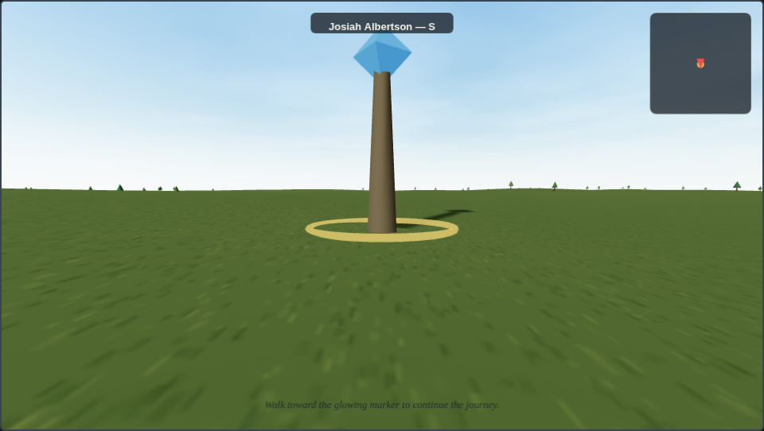

Walk your ancestors'
real lives.
Turn your family tree into a 3D world you can explore on foot — every birth, marriage, migration and homestead, placed on real ground and labeled fact or legend. Not a chart. A place you can stand in.
🔒 Your family data is read in your browser and never leaves your device. No account. No tracking.

Your family stays yours. Ancestor Journey reads your GEDCOM file entirely inside your browser — there is no upload, no server, no account, and no analytics or ad tracking of any kind. Nothing about your relatives is ever transmitted anywhere.
From family tree to walkable world in three steps
-
1
Export your tree
Download a GEDCOM (
.ged) from Ancestry, FamilySearch, MyHeritage, Gramps, RootsMagic — any of them. It's the universal family-history format. -
2
Load it (privately)
Drop the file in. It's parsed on your device in a heartbeat; everyone in it with a documented life becomes walkable.
-
3
Walk their life
Pick an ancestor and step into a real 3D world built from their own records — walk to each life event and read the story behind it.
Built for real records, not invented lore
Fact or legend, always labeled
Every life event carries a confidence badge — Documented, Inferred, or Legend — so a family story is never dressed up as proven fact.
Placed on real ground
Stops sit where they really happened, in true compass bearing — distances gently compressed so an ocean crossing and a farm are both walkable.
Family & legacy
Each journey closes on spouse, children and occupation, drawn straight from the tree you loaded.
Keepsakes worth sharing
Pro turns any journey into a beautiful postcard you can download and share — a small heirloom from a long life.
Simple, honest pricing
Explore your whole tree for free. Unlock the extras once, forever — no subscription.
Free
$0
- Walk your entire family tree
- Both sample ancestors
- Fact/legend confidence labels
- 100% private — data never leaves your device
Pro
$29 once
- Everything in Free
- Keepsake postcard export
- Ultra visual fidelity soon
- Saved journeys soon
- Supports a solo, ad-free project
Secure checkout by Lemon Squeezy
Questions
Is my family data safe?
Yes — completely. Your GEDCOM is read and parsed inside your own browser using standard web APIs. It is never uploaded, we run no server that could receive it, there's no account, and there is no analytics or advertising tracking anywhere on the site.
What's a GEDCOM, and where do I get one?
GEDCOM (.ged) is the standard export format every major
genealogy service supports. In Ancestry, FamilySearch, MyHeritage,
Gramps or RootsMagic, look for “Export” on your tree and choose GEDCOM.
Do I need to buy anything to use it?
No. Walking your whole tree and both sample lives is free forever. Pro is a one-time unlock for extras like the keepsake postcard export.
My tree has no coordinates — will it still work?
Yes. When a tree carries only place names, we resolve them to approximate locations from a small built-in gazetteer (still with no network call), and label those stops honestly as Inferred.